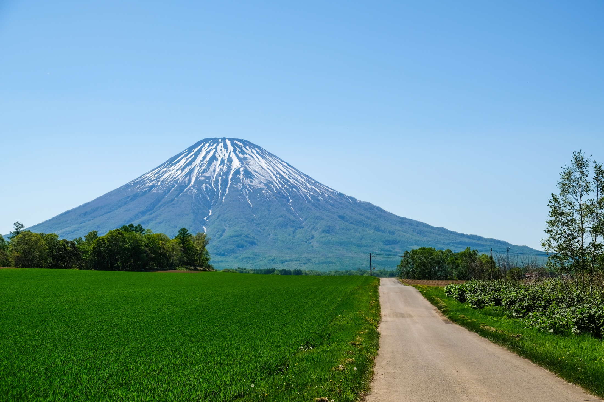
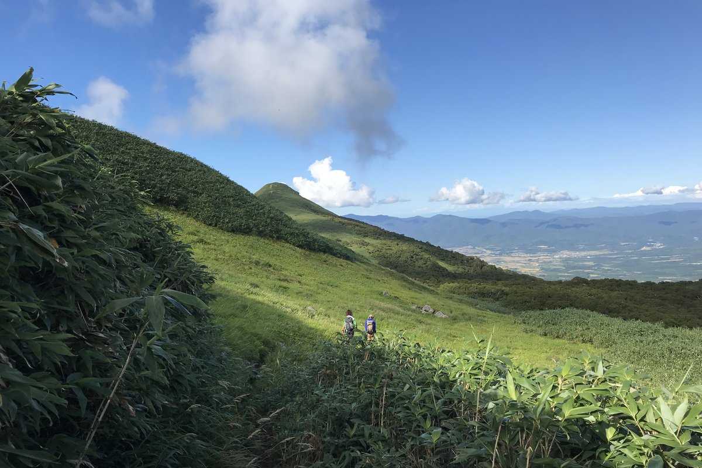
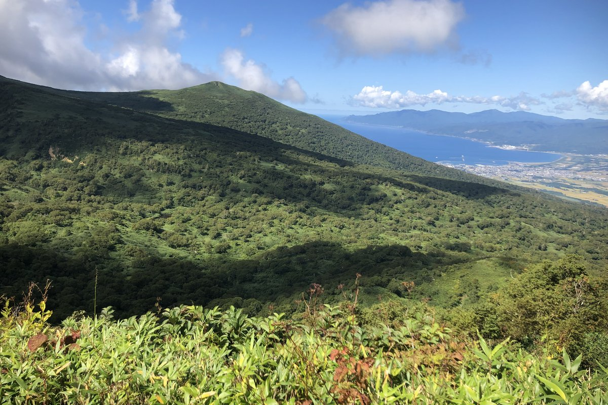

Niseko · Summer · Hiking


Hiking
Full Day
the big one ～
A full-day premium hike (approx. 7–10 hrs) for guests who want a true mountain experience. Choose between a single signature peak — Mt. Yotei or Niseko Annupuri — or one of four Niseko Range Traverse routes that link multiple summits across the range.
The guide selects the most rewarding option based on your fitness, the weather and your ambition. Lunch bento included.
You book the tour — these are example routes, from intermediate day-hikes to advanced traverses. Your guide matches the route to your fitness, ambition and the day.





Weather and conditions decide. Your guide picks the route that will be at its best and safest.
* Route figures are guides; the guide selects the day's route to your fitness, ambition and the weather.
Gear check, route briefing, and we match the climb to the day.
A steady ascent through forest toward the ridge — at your pace.
The high ground opens up — summits, traverses, the real thing.
A full lunch bento where the view earns it.
Back down the range at a comfortable pace, legs earned.
Down by late afternoon, a true mountain day behind you.
* Sample timing — the exact flow adapts to your chosen route, group pace and weather.


From fresh green and lingering snow in early summer, through deep green highlands, to golden larch and crimson maple by late autumn — the same trail, never the same day.
Valley daytime highs and nighttime lows. Summits run 5–10°C colder and windier, so we carry a warm layer for you — bring a light rain jacket even on a clear day.
Dress for the valley, pack for the summit. The tops are always cooler and windier — so we carry a spare warm layer for you.
Trail shoes or sturdy trainers for Strolls · proper hiking boots on Full-Day hikes — gear and boots available at StrideLab.
These are starting points, not rules. Mountain weather changes extremely fast and there is no perfect outfit — your guide checks the day’s conditions and helps you adjust. When in doubt, bring the extra layer.
Daylight shifts a lot through the season — long, bright mornings in June; shorter, golden afternoons by October. Your guide proposes the best start and finish times to catch the conditions at their finest, and tailors them around your schedule.
Approximate average sunrise / sunset, JST (目安). Exact times confirmed with your guide.
Request-based booking — send your preferred date by 15:00 the day before. Your local guide scouts the day's weather, conditions and route, and confirms the tour can run at its best by 18:00.
リクエスト制：前日15時までにご希望日を。ガイドが当日のコンディションを下調べし、最高の状態で催行できることを確認のうえ前日18時までにご連絡します。
By booking you agree to our Terms & Cancellation Policy.